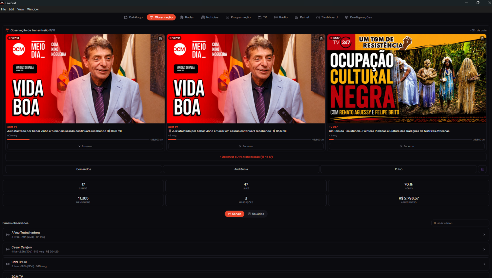
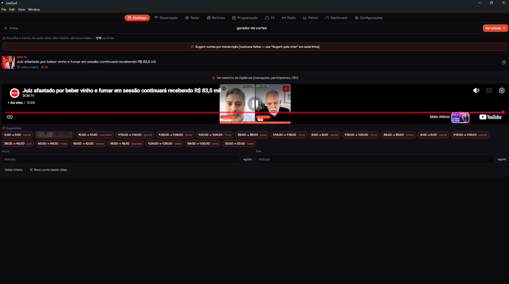
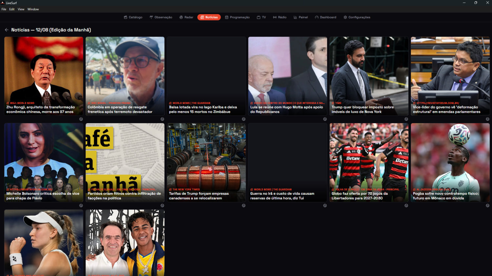
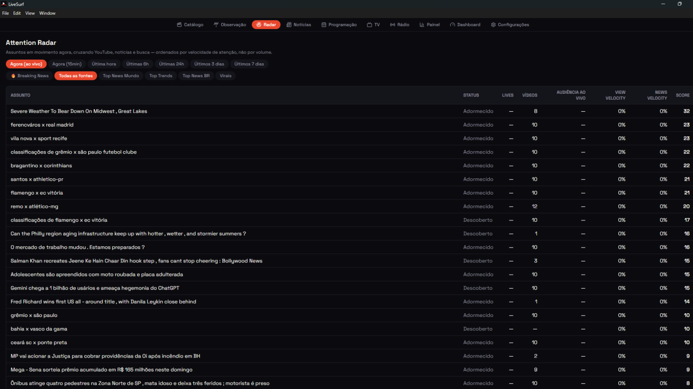
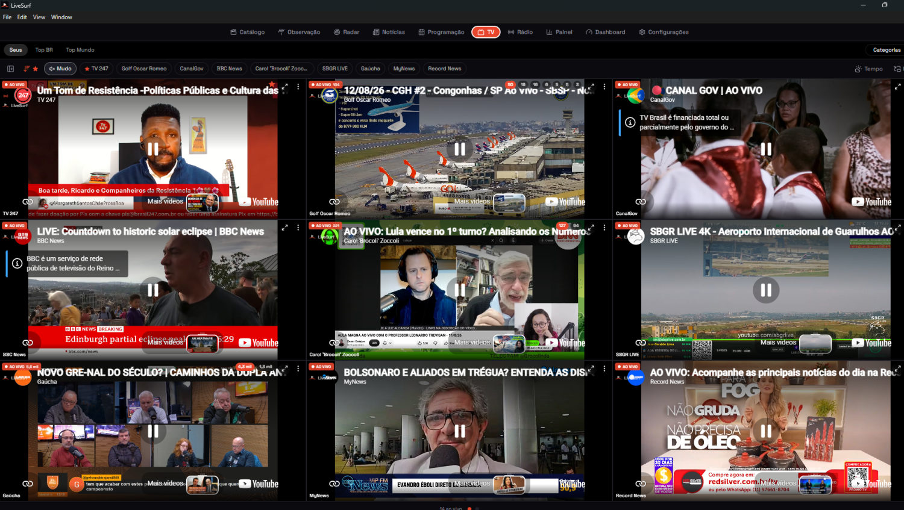
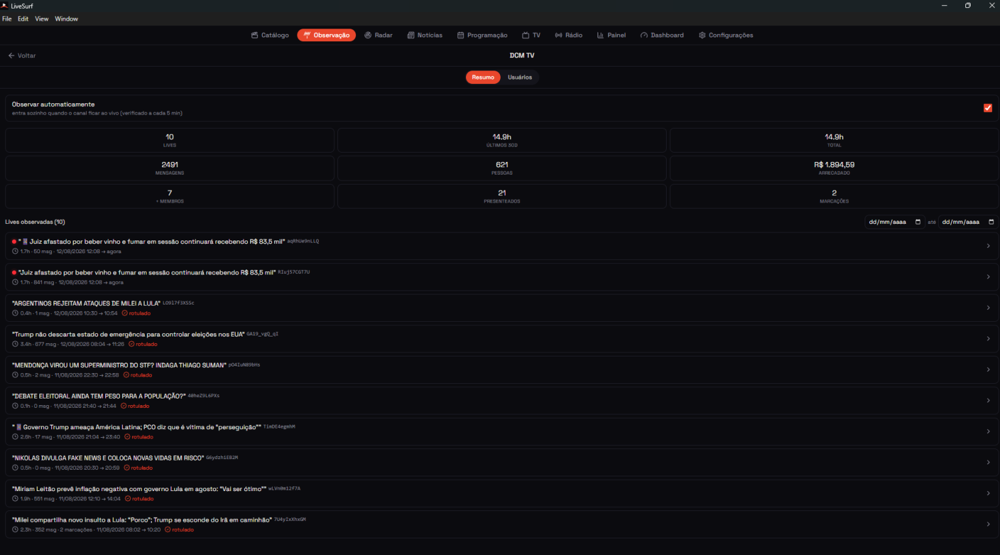
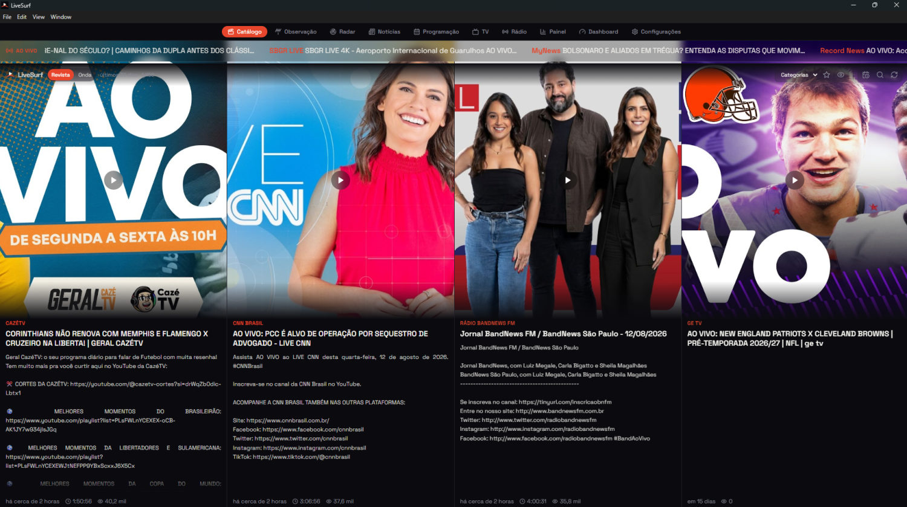

Observe o chat das transmissões em tempo real, entenda o que a audiência
está dizendo e transforme isso em corte, pauta e relatório.
Chat Observability para transmissões ao vivo
O que é. LiveSurf é uma plataforma de
chat observability: reúne numa só tela as transmissões ao
vivo que interessam à sua operação e, nas que você escolhe observar, lê o
chat em tempo real para dizer o que está acontecendo com a audiência —
quem participa, o que repercute e o que precisa de moderação.
Para quem é
Redações, produtoras e equipes de moderação que precisam acompanhar a
cobertura de um mesmo assunto em vários canais ao mesmo tempo, e saber o
que a audiência está dizendo enquanto a transmissão acontece.
O que faz
Observador de chats em tempo real
Acompanhe o chat das transmissões enquanto elas acontecem, com disparo
automatizado ou manual: você marca os canais que
interessam e a observação começa sozinha quando eles entram ao vivo — ou
você abre na hora que quiser, na live que quiser.

Três transmissões observadas ao mesmo tempo — duas delas do mesmo canal
Gerador de cortes
Automatizado, semi-automatizado e manual. A plataforma
detecta os momentos pelo comportamento do chat, sugere para você
aprovar, ou aceita a marcação feita à mão.

Sugestões automáticas de trecho, com ajuste manual de início e fim
Roteiro de lives
Monte a pauta da transmissão em ondas de vídeos e
notícias, prontas para entrar no ar na sequência que você
definir.

Onda de notícias pronta para virar pauta
Radar de trends
O que está subindo agora, cruzando os chats observados
com feeds de notícias do Brasil e do mundo.

Assuntos em movimento, ordenados por velocidade de atenção
Grade de programação
A agenda das transmissões que importam para a sua operação, em visão
diária, semanal e mensal.
TV
As lives ao vivo e em mosaico: várias transmissões
simultâneas na mesma tela, com áudio de uma por vez.

Nove transmissões ao vivo na mesma tela
Relatórios e dashboards
Da transmissão isolada ao acumulado por canal: horas observadas,
participação, contribuições e recorrência de público.

Relatório consolidado por canal, com todas as transmissões acompanhadas
Catálogo de vídeos
Tudo que os canais acompanhados já publicaram,
organizado e pesquisável num lugar só.

Tudo que os canais acompanhados publicaram, num lugar só
Moderação assistida
Mensagens candidatas a discurso de ódio são sinalizadas automaticamente
para revisão humana. A plataforma levanta a mão; quem decide é sempre uma
pessoa da sua equipe.
Como você usa
O LiveSurf é entregue como aplicativo instalável, mediante contratação —
não há versão web nem cadastro aberto.
Android (APK)
Windows (instalador)
Assinatura
O acesso é por assinatura recorrente. A assinatura remunera
o software: a interface de monitoramento, a consolidação do chat, os
relatórios e a triagem assistida de moderação.
O LiveSurf utiliza os YouTube API Services. Toda reprodução de vídeo
acontece pelo player oficial do YouTube, e os dados obtidos da API
nunca são vendidos, revendidos ou licenciados como produto.